MaBoSS Project
MaBoSS (Markovian Boolean Stochastic Simulator) is a C++ software for simulating continuous/discrete time Markov processes applied on Boolean networks. It bridges the gap between purely logical models and quantitative, stochastic descriptions of biological systems.
MaBoSS uses a dedicated language to associate activation and inactivation rates to each node of the network. Given some initial conditions, it applies a Monte-Carlo kinetic algorithm (Gillespie algorithm) to produce stochastic time trajectories, from which it estimates the time evolution of the probabilities of the network states and of individual nodes. It also computes global and semi-global characterizations of the whole system, such as the probabilities of fixed points and the stationary distribution, and makes it easy to simulate mutants and drug treatments by modifying node rates or initial conditions.
Models are written in MaBoSS's own format (a .bnd file for the network and a .cfg file for the simulation parameters). Since version 2.4, MaBoSS can also read models in the standard SBML-qual format. Simulations can be run on large CPU clusters (MPI) and GPU accelerators.
MaBoSS is open source (BSD 3-Clause license) and developed on GitHub.
Three ways of using MaBoSS
- pyMaBoSS (most common): a Python interface to load, modify, run and analyse MaBoSS models from scripts or Jupyter notebooks. It is the recommended way of using MaBoSS today, and it integrates with the other logical modelling tools of the CoLoMoTo Interactive Notebook. See how to install it.
- WebMaBoSS (for beginners): a web interface to import, simulate and analyse Boolean models directly in the browser, without any installation or programming. It is the best way to discover MaBoSS.
- MaBoSS (the original command-line tool): the C++ simulation engine itself, run from a terminal on .bnd and .cfg files. It gives direct access to all options and is suited to automated pipelines and computing clusters. See how to install it.
MaBoSS ecosystem
- PROFILE: personalization of logical models with the omics data of patients or cell lines;
- PhysiBoSS: multiscale simulations of cell populations in their physical environment, integrating MaBoSS into PhysiCell;
- UPMaBoSS: dynamics of populations of interacting cells, including cell division, death and communication;
- EnsembleMaBoSS: simulation of ensembles of logical models;
- ExaStoLog: exact computation of the stationary probabilities of small stochastic logical models;
- MaBoSS.MPI and MaBoSS.GPU: high-performance implementations for large CPU clusters and GPU accelerators.

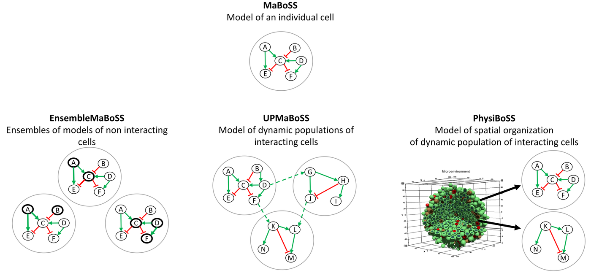
MaBoSS is developed by the Computational Systems Biology of Cancer team at Institut Curie. See the Publications page for the articles describing these tools and their applications.
Installation
MaBoSS can be used in three ways (see How To). The installation depends on which one you choose.
With conda (recommended)
The conda package installs pyMaBoSS together with the MaBoSS binaries, on Linux, MacOS and Windows:
conda install -c colomoto pymaboss
With pip
The pip package does not include the MaBoSS binaries. After installing it, run the setup script to download them:
pip install maboss python -m maboss_setup
maboss_setup works on Linux and MacOS when conda is available. On Windows, or if it fails, use python -m maboss_setup_experimental instead. The binaries can also be downloaded manually from the GitHub releases page and placed in a folder of your PATH.
With Docker
pyMaBoSS is also included in the CoLoMoTo Interactive Notebook, a Docker image providing Jupyter and many logical modelling tools.
See the pyMaBoSS documentation for more details.
How to use MaBoSS
There are three main ways of using MaBoSS. All of them rely on the same simulation engine and the same model format (a .bnd file describing the network and a .cfg file describing the simulation parameters).
pyMaBoSS is the Python interface of MaBoSS, and the most common way of using it. It allows to load, modify, simulate and analyse models from Python scripts or Jupyter notebooks, and is part of the CoLoMoTo Interactive Notebook.
To install pyMaBoSS, see Installation.
Example
This example uses the p53/Mdm2 model of the MaBoSS 2.0 tutorial. Download its bnd file and cfg file, then in Python:
import maboss
# Load the model
sim = maboss.load("example.bnd", "example.cfg")
# Set the initial condition: p53 and Mdm2 inactive, DNA damage with probability 0.6
sim.network.set_istate(["p53_b1", "p53_b2"], {(0, 0): 1, (1, 0): 0, (1, 1): 0})
sim.network.set_istate("Mdm2cyt", [1, 0])
sim.network.set_istate("Mdm2nuc", [1, 0])
sim.network.set_istate("DNAdam", [0.4, 0.6])
# Set the simulation parameters
sim.update_parameters(max_time=4, sample_count=10000)
# Run the simulation
res = sim.run()
The probability of each node to be active, as a function of time:
res.plot_node_trajectory()

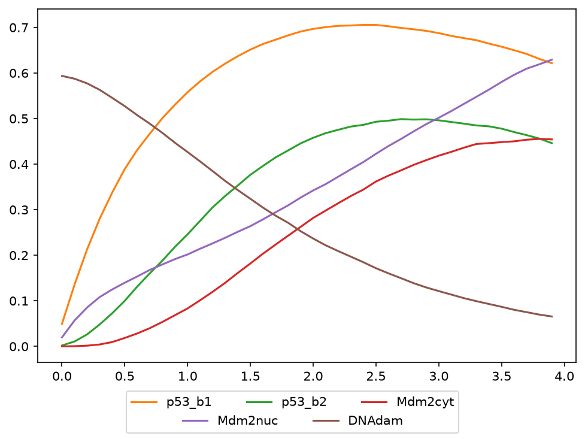
The probabilities of the network states (each state is the list of its active nodes):
res.plot_trajectory()

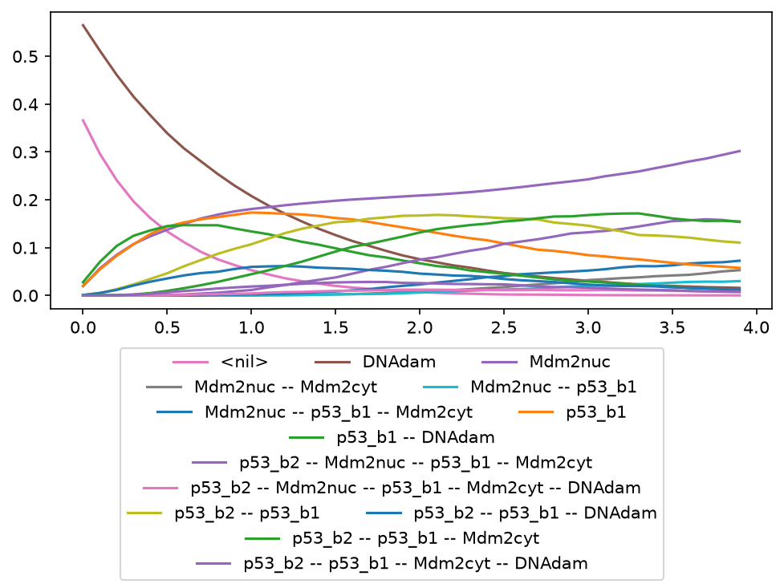
The distribution of the states at the last time point:
res.plot_piechart()

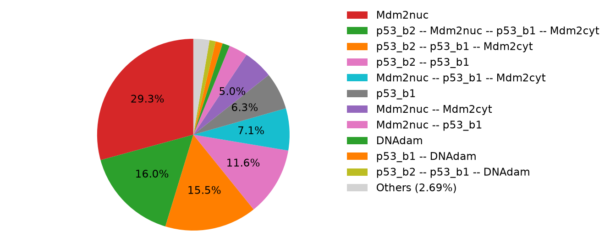
All these results can also be obtained as pandas dataframes, for further analysis:
res.get_nodes_probtraj()
| Time | p53_b1 | p53_b2 | Mdm2cyt | Mdm2nuc | DNAdam |
|---|---|---|---|---|---|
| 0.0 | 0.0482 | 0.0019 | 0.0000 | 0.0196 | 0.6020 |
| 0.1 | 0.1369 | 0.0108 | 0.0006 | 0.0515 | 0.5978 |
| 0.2 | 0.2150 | 0.0251 | 0.0021 | 0.0774 | 0.5877 |
| 0.3 | 0.2796 | 0.0438 | 0.0047 | 0.0995 | 0.5740 |
| 0.4 | 0.3385 | 0.0674 | 0.0096 | 0.1189 | 0.5563 |
res.get_states_probtraj()
| Time | <nil> | DNAdam | Mdm2nuc | Mdm2nuc -- DNAdam | … |
|---|---|---|---|---|---|
| 0.0 | 0.3579 | 0.5743 | 0.0196 | 0.0000 | … |
| 0.1 | 0.2927 | 0.5190 | 0.0515 | 0.0000 | … |
| 0.2 | 0.2403 | 0.4675 | 0.0772 | 0.0000 | … |
| 0.3 | 0.1981 | 0.4234 | 0.0989 | 0.0000 | … |
| 0.4 | 0.1595 | 0.3843 | 0.1177 | 0.0000 | … |
Mutants are simulated by copying the simulation and forcing a node ON or OFF. Here, when nuclear Mdm2 is always active, p53 is no longer activated:
mutant = maboss.copy_and_mutate(sim, ["Mdm2nuc"], "ON") mutant_res = mutant.run() mutant_res.plot_piechart()

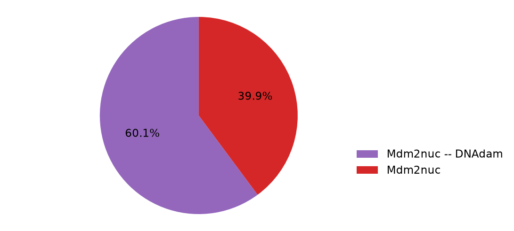
Models in SBML-qual format can be loaded with maboss.loadSBML("model.sbml", "model.cfg").
pyMaBoSS also provides sensitivity analysis, ensemble simulations and UPMaBoSS. See the pyMaBoSS documentation for the full API and more tutorials.


The tutorial shows how to simulate a large (133 nodes) prostate cancer model with each of these three tools.
Toy Model
Model description
This toy model is a simple example consisting of three nodes: A, B and C. A is activated by C and inhibited by B, B is activated by A, and C can only be degraded, when both A and B are inactive. This example illustrates the case of a simple loop in the transition graph. We study two cases, with two different rates for one of the transitions: fast and slow.
Influence graph

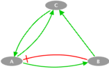
Transition graph
Since the model is small enough, we first ran it with an asynchronous updating strategy in GINsim, to visualize the transition graph. It shows the fixed point [ABC] = [000], and a cycle [101] → [111] → [011] → [001]. At [001], the system can either continue to cycle, or escape the cycle and reach the fixed point [000]. We explore the dynamics when this escape rate is slow or fast.

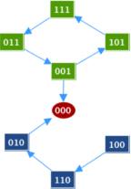
Model
Node A {
rate_up = (C AND (NOT B)) ? $Au : 0.0;
rate_down = B ? $Ad : 0.0;
}
Node B {
rate_up = A ? $Au : 0.0;
rate_down = A ? 0.0 : $Ad;
}
Node C {
rate_up = 0.0;
rate_down = ((NOT A) AND (NOT B)) ? $escape : 0.0;
}
The parameter $escape corresponds to the degradation of C: it is set to 10 in the fast case, and to 0.00001 in the slow case. All the nodes are initially active.
- BND file
- Configuration file, fast escape
- Configuration file, slow escape
- Configuration file, slow escape, long trajectories
MaBoSS -c Four_cycle_FEscape.cfg -o Four_cycle_FEscape Four_cycle.bnd MaBoSS -c Four_cycle_SEscape.cfg -o Four_cycle_SEscape Four_cycle.bnd MaBoSS -c Four_cycle_SEscape_long.cfg -o Four_cycle_SEscape_long Four_cycle.bnd
All the simulations and figures of this page are reproduced in a Jupyter notebook, using pyMaBoSS. Download the notebook alone, or an archive with the notebook and all the files needed to run it.
Notebook (ToyModel.ipynb) Notebook + model files (zip)Results
We follow the probabilities of the network states, and the entropy (H) and transition entropy (TH), as functions of time. <nil> is the state where all the nodes are inactive: the fixed point [000].
With a fast escape, the probability to reach the fixed point tends to 1, and both entropies tend to 0.


With a slow escape, the early response does not show the fixed point: the system seems stuck in a limit cycle.


It is only after a long time that the system reaches the fixed point, and that the entropies reach 0. The two simulations show both the transient and the asymptotic behaviours.


Cell Cycle
Model description
The model is based on a published Boolean model of the mammalian cell cycle (Fauré et al., 2006). It describes the signaling network that controls the mammalian cell cycle.
Influence graph

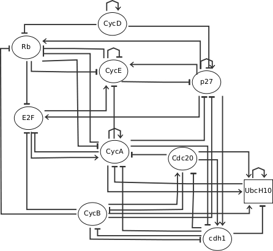
Model
The model includes the possibility to simulate mutants: in the rates, the parameters $gene_del are set to 0 for the wild type, and to 1 to simulate a deletion. Two configuration files are provided: one with an initial condition corresponding to the start of the cell cycle, and one with a random initial condition, to study the stationary distributions.
MaBoSS -c cellcycle_runcfg.cfg -o cellcycle_runcfg cellcycle.bnd MaBoSS -c cellcycle_runcfg_randinit.cfg -o cellcycle_runcfg_randinit cellcycle.bnd
All the simulations and figures of this page are reproduced in a Jupyter notebook, using pyMaBoSS. Download the notebook alone, or an archive with the notebook and all the files needed to run it.
Notebook (CellCycle.ipynb) Notebook + model files (zip)Results
Probabilities of the cyclins, and entropies, from the start of the cell cycle:


From a random initial condition, about half of the cells end in the state where no cyclin is active (<nil>): a fixed point, representing the G1 phase. In the other half, CycD is active and the other cyclins keep cycling: a desynchronized proliferating cell population.

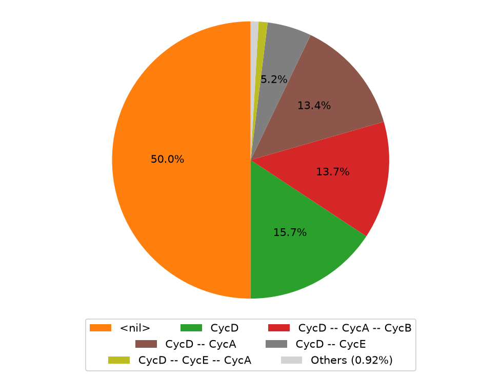
Cell Fate
Model description
The cell fate decision example is based on a published Boolean model (Calzone et al., 2010). It describes how the cell chooses between three different fates, apoptosis, survival (NFκB activation) and necroptosis (non-apoptotic cell death, NonACD), in response to the engagement of death receptors (through Fas and TNFR).
Influence graph

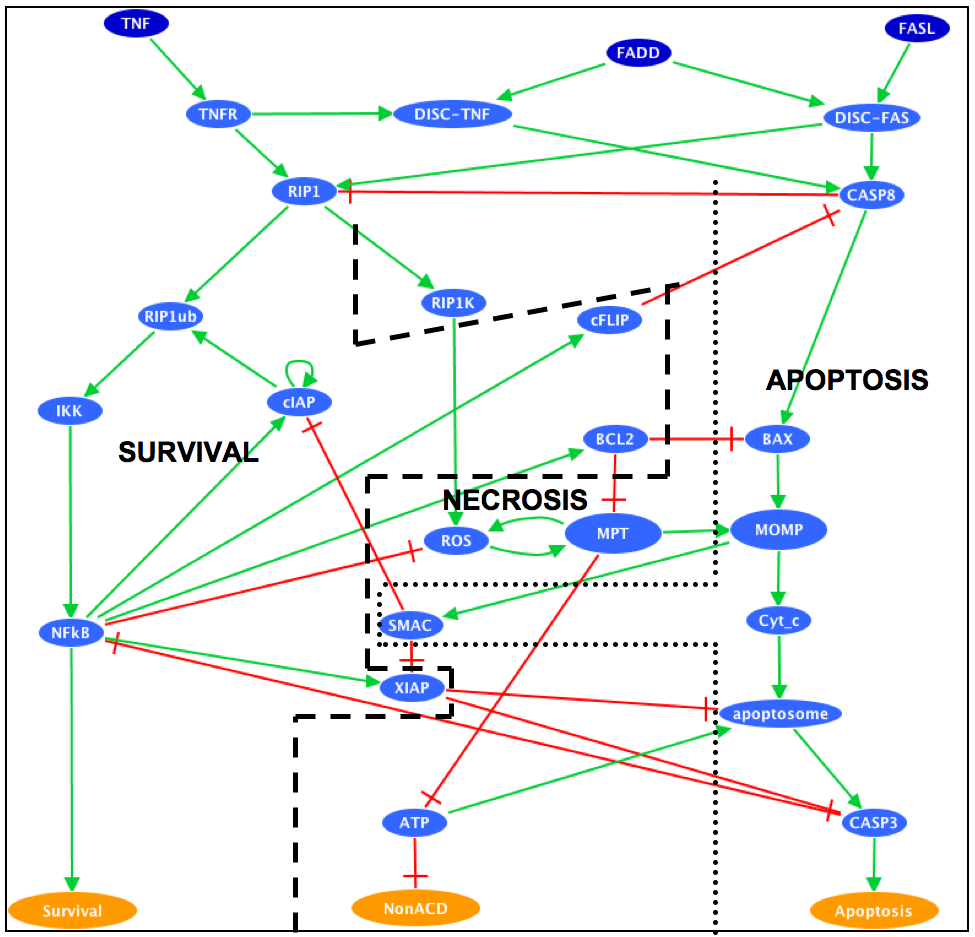
Model
The model includes the possibility to simulate mutants: in the rates, the parameters $gene_del (deletion) and $gene_oe (over-expression) are set to 0 for the wild type, and to 1 to simulate the mutant.
MaBoSS -c CellFateModel.cfg -o CellFateOut_wt CellFateModel.bnd
All the simulations and figures of this page are reproduced in a Jupyter notebook, using pyMaBoSS. Download the notebook alone, or an archive with the notebook and all the files needed to run it.
Notebook (CellFate.ipynb) Notebook + model files (zip)Results
In the wild type, survival is transiently activated, before most of the cells die by apoptosis:

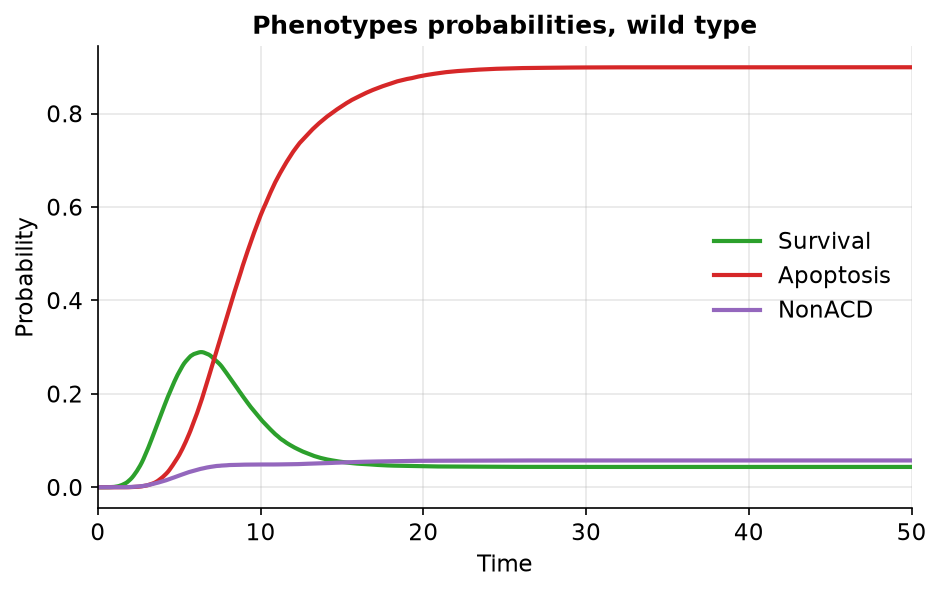
The three phenotypes are reachable, as in the published model, which showed the following phenotypes (A: apoptosis, N: necrosis, S: survival). The probabilities are not absolute values: they depend on the computation and on the details of the model (in the published model, the trajectories were computed over the transition graph).

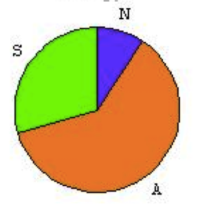
The final phenotypes of the wild type, and of two mutants. The deletion of CASP8 leads to the disappearance of apoptosis, in accordance with published experiments:


p53 / MDM2
Model description
We consider a published model of the p53 response to DNA damage (Abou-Jaoudé et al., 2009). p53 interacts with Mdm2, which appears in two forms, cytoplasmic and nuclear. On one hand, p53 upregulates the level of cytoplasmic Mdm2, which is then transported into the nucleus. On the other hand, nuclear Mdm2 facilitates the degradation of p53. DNA damage participates in the degradation of Mdm2, and p53 inhibits the DNA damage signal by promoting DNA repair. p53 has three levels, encoded with two nodes: p53 (level at least 1) and p53_h (level 2).
Influence graph

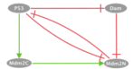
Transition graph
The transition graph contains two cycles and a fixed point [p53 Mdm2C Mdm2N Dam] = [0 0 1 0], where nuclear Mdm2 is active and the rest is inactive.

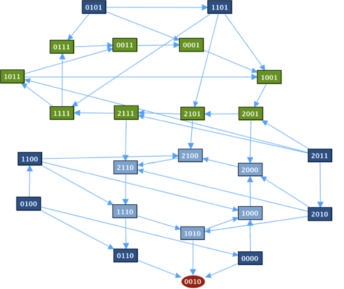
Model
MaBoSS -c p53_Mdm2_runcfg.cfg -o p53_Mdm2 p53_Mdm2.bnd
All the simulations and figures of this page are reproduced in a Jupyter notebook, using pyMaBoSS. Download the notebook alone, or an archive with the notebook and all the files needed to run it.
Notebook (p53_Mdm2.ipynb) Notebook + model files (zip)Results
Probabilities of the nodes, from the initial condition [p53 Mdm2C Mdm2N Dam] = [0 * 1 1]: the probability of p53 is the probability that the level of p53 is at least 1, and the probability of p53_h that it is 2. And the entropies:


Drosophila Patterning
Model description
The model of the segment polarity genes is based on a published model (Sánchez and Thieffry, 2003), and the analysis on another publication (Chaves and Albert, 2008), which studied the effect of random noise on this network. It represents the last step of Drosophila segmentation: a finer spatial patterning, driven by the segment polarity genes.
Influence graph

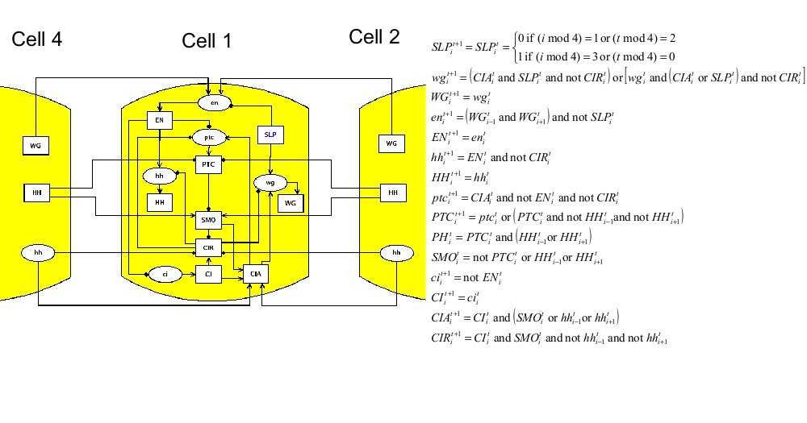
Model
The model consists of four identical signaling pathways, one for each of four adjacent cells. mRNA and proteins are considered separately: for instance, en is the mRNA of the protein EN. Cell-cell interactions are represented by connections between adjacent cells: for example, EN is transcriptionally activated by WG through the membrane, with the connections WG4→en1, WG2→en1, WG1→en2, WG3→en2, WG2→en3, WG4→en3, WG3→en4 and WG1→en4. The model is periodic: cell 1 is adjacent to cell 4.
Two transition rates are used: $rate_RNA = 1 for transcriptional influences, and $rate_protein = 10 for post-transcriptional influences. Random noise on every node is tuned by the parameter $noise. The model should produce the expected patterning (the reference state, in which none of the four cells are identical) from the initial state below, when the pair rule gene SLP has the pattern SLP1,2 = 0 and SLP3,4 = 1. Two cases are considered: no noise ($noise = 0) and low noise ($noise = 0.01).


- BND file
- Configuration file, no noise
- Configuration file, with noise
- Configuration file, with noise, for the stationary distribution
With noise, there is only one indecomposable stationary distribution, in which all the network states have a non-zero probability: the clustering of stationary distributions would artificially separate the estimates. A specific configuration file is provided to compute it, with a longer maximum time, fewer trajectories, and a clustering threshold set to 0.
MaBoSS -c D_Pattern_ContT_noIntNode.cfg -o D_Pattern_ContT_noIntNode D_Pattern_ContT.bnd MaBoSS -c D_Pattern_ContT_noIntNode_noise.cfg -o D_Pattern_ContT_noIntNode_noise D_Pattern_ContT.bnd MaBoSS -c D_Pattern_ContT_noIntNode_noise_4statdist.cfg -o D_Pattern_ContT_noIntNode_noise_4statdist D_Pattern_ContT.bnd
All the simulations and figures of this page are reproduced in a Jupyter notebook, using pyMaBoSS. Download the notebook alone, or an archive with the notebook and all the files needed to run it.
Notebook (DrosophilaPatterning.ipynb) Notebook + model files (zip)Results
Without noise, the expected patterning is reached, as shown by the trajectories of the Hamming distance distribution (HD), with the expected patterning as the reference state:

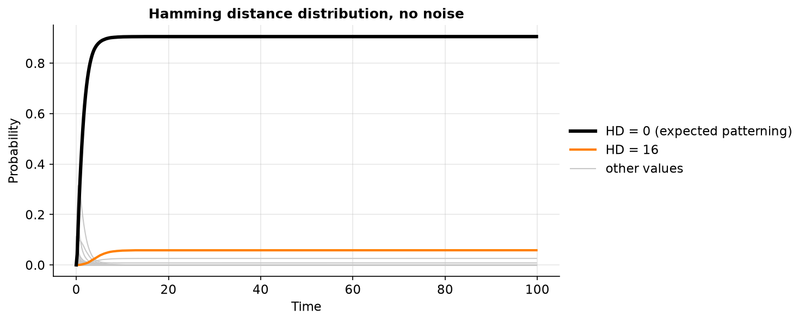
The asymptotic behavior consists of fixed points. The most probable one (FP 6) is the expected patterning:

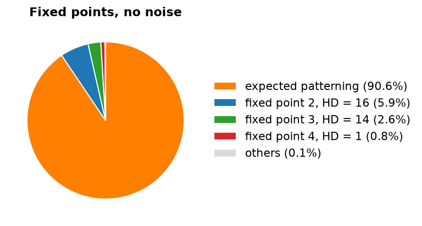


With noise, the expected patterning is no longer stable:

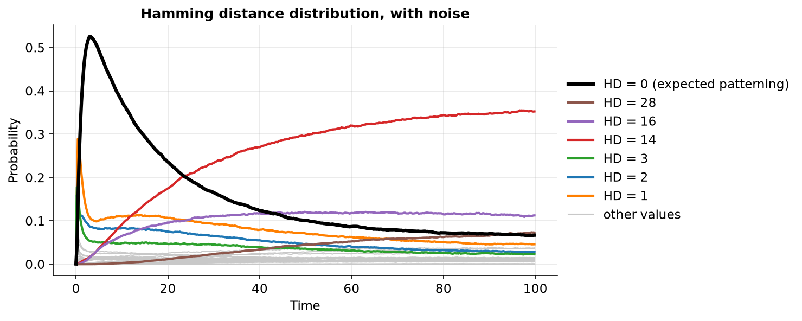
The asymptotic behavior is then a single stationary distribution. Its four most probable states are shown below, with their probabilities. The most probable one corresponds to a "broad type" patterning, as defined in the publications above: two adjacent cells have identical node states.


EGF-TNF Signaling
Model description
This model was used as an example for the SBML-qual standard format, published by Chaouiya et al. (2013). It can be found in the BioModels database (BIOMD0000000562).
Influence graph
The model can be visualized with GINsim. In GINsim, set egf and tnfa as inputs (tick the box "Input" in the Modeling Attributes panel).

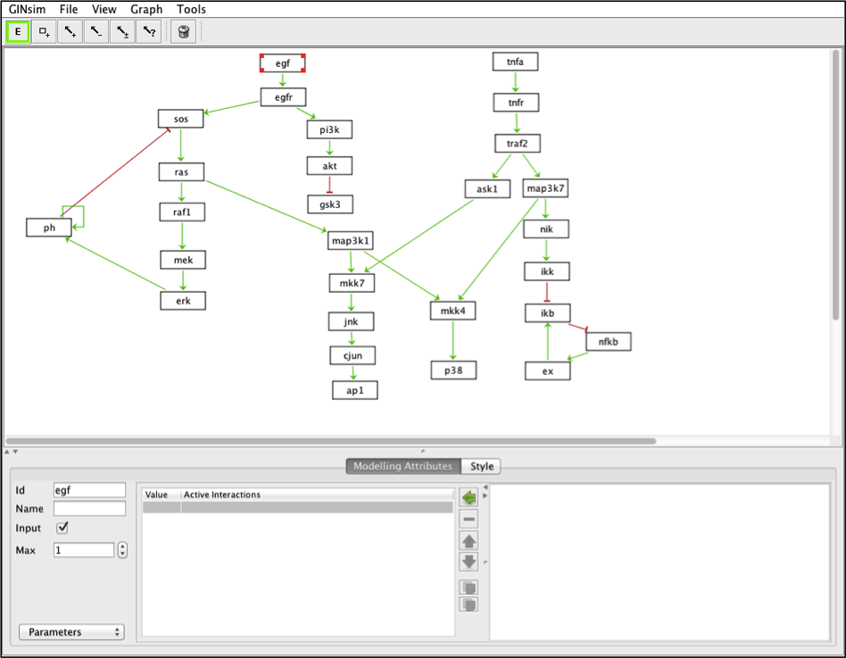
Model
The bnd and cfg files were exported from GINsim. In the configuration file, the initial state of every node is random, and ras, egf and akt are the output nodes. To reproduce the figures of the publication, the simulations below start with all the nodes inactive, except EGF, which is present in half of the cells (no TNFα), until time 50.
MaBoSS -c chaouiya_maboss.cfg -e 'tnfa.istate = 0; max_time = 50; time_tick = 0.1' -o chaouiya chaouiya_maboss.bnd
A tutorial using this model in SBML-qual format is available here.
All the simulations and figures of this page are reproduced in a Jupyter notebook, using pyMaBoSS. Download the notebook alone, or an archive with the notebook and all the files needed to run it.
Notebook (EGF_TNF.ipynb) Notebook + model files (zip)Results
The simulation reaches two fixed points:

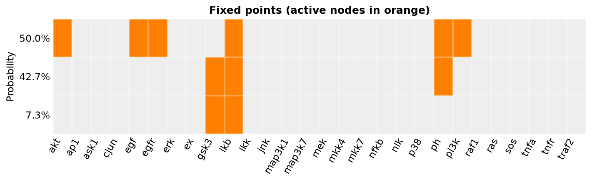
| FP | Proba | State (active nodes) |
|---|---|---|
| FP 1 | 0.5000 | akt -- ikb -- egf -- egfr -- ph -- pi3k |
| FP 2 | 0.5000 | gsk3 -- ikb |
They correspond to the stable states of the published model for the wild type:

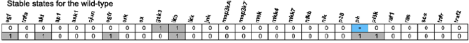
As in the publication, RAS is activated first, then ERK: their activities are transient, while AKT remains active when EGF is present:

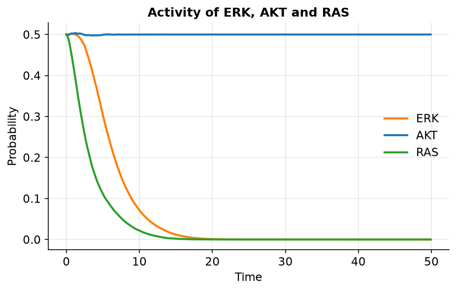
And the corresponding results in the initial publication:

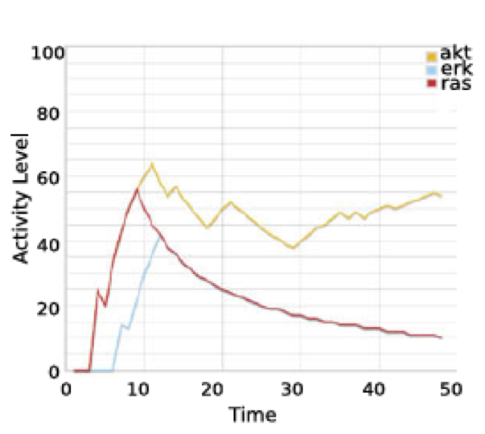
Reference
Chaouiya C, Bérenguier D, Keating SM, Naldi A, Van Iersel MP, Rodriguez N, Dräger A, Büchel F, Cokelaer T, Kowal B, et al. SBML qualitative models: a model representation format and infrastructure to foster interactions between qualitative modelling formalisms and tools. BMC Systems Biology. 2013;7:135. doi:10.1186/1752-0509-7-135
Prostate Cancer
Model description
This model, published by Montagud et al. (eLife, 2022), describes the signaling pathways involved in prostate cancer. Without any mutation, it can be considered as a model of healthy prostate cells. It was then personalized to the data of patients (TCGA) and cell lines, to study their response to treatments.
Influence graph

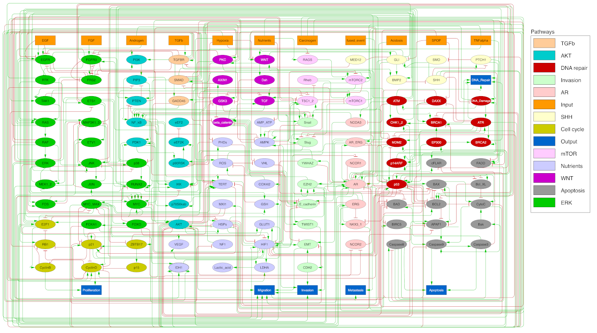
Model
With 133 nodes, it is a large model, which requires an executable of MaBoSS supporting more than 128 nodes, such as MaBoSS_256n (see Installation). The model files are provided with the article (PROFILE_v2 repository).
- BND file
- Configuration file
- SBML-qual file
- Ten personalized patient models, included in the archive below
MaBoSS_256n -c Montagud2022_Prostate_Cancer.cfg -o results Montagud2022_Prostate_Cancer.bnd
The tutorial shows how to simulate this model with pyMaBoSS, WebMaBoSS and the command line.
All the simulations and figures of this page are reproduced in a Jupyter notebook, using pyMaBoSS. Download the notebook alone, or an archive with the notebook and all the files needed to run it.
Notebook (ProstateCancer.ipynb) Notebook + model files (zip)Results
With random inputs, the simulation explores all the possible phenotypes:

Healthy cells mostly exhibit quiescence (neither proliferation nor apoptosis) in the absence of any input (Figure 3A of the article):

To compare several simulations, we plot the final probability of each phenotype. When nutrients and growth factors (EGF) are present, proliferation is activated. The inhibition of MYC_MAX blocks it (Appendix 1, figure 34):

Among several candidate nodes, the inhibition of AKT, EGFR or MYC_MAX blocks proliferation in the growth condition:

The personalized models of patients show very different phenotypes:

And they respond differently to the inhibition of MYC_MAX, in the growth condition: proliferation is reduced below 10% only for some of them.

Sizek Cell Cycle
Model description
This model, published by Sizek et al. (PLoS Comput Biol, 2019), integrates growth signaling, the regulatory network controlling the mammalian cell cycle, and apoptosis. With 87 nodes, it describes how a generic human cell regulates proliferation and apoptosis.
The simulations below are adapted from the tutorial of the CoLoMoTo software suite (Noël et al., Interface Focus, 2025). Its complete notebook also analyses this model with other tools of the suite (GINsim, bioLQM, BNS...).
Influence graph

Model
The model is available in the GINsim model repository. The MaBoSS files were obtained by converting it with bioLQM. As the model has 87 nodes, it requires an executable of MaBoSS supporting more than 64 nodes, such as MaBoSS_128n (see Installation).
- BND file
- Configuration file (all initial values set to 0)
- SBML-qual file and GINsim file
All the simulations and figures of this page are reproduced in a Jupyter notebook, using pyMaBoSS. Download the notebook alone, or an archive with the notebook and all the files needed to run it.
Notebook (SizekCellCycle.ipynb) Notebook + model files (zip)Results
The simulations start from the initial state defined by Sizek et al. (their figure 6), with 5000 trajectories up to time 200. In the wild type, a transient cyclic-like behaviour is eventually lost due to the spontaneous activation of Casp3: the apoptotic stable state progressively dominates. The entropy rises abruptly then slowly decreases, while the transition entropy stays close to zero after a small peak, suggesting a transient periodic behaviour.


The final states of the wild type:

With the death signal TRAIL active at the initial state, Casp3, and thus apoptosis, rise much faster, and the system reaches a stable state:


The ectopic activity of Casp8 drives the cells into apoptosis faster. When Casp8 is knocked down, Casp3 is still ultimately activated, as in the wild type: in this model, apoptosis can occur even without Casp8.

Screening the loss-of-function and ectopic activation of five nodes, we look for mutants blocking apoptosis (Casp3 below 1%) while keeping the cell cycle active (CyclinE above 15%):

Both the sustained activations of p110 and FoxO3 turn off Casp3 while maintaining the cell cycle:


In the wild type, the cyclins show the expected sequence of peaks: CyclinE, then CyclinA, then CyclinB. As MaBoSS reports mean probabilities over many trajectories, these oscillations are rapidly damped.

MaBoSS can also estimate the frequencies of the transitions between the activity patterns of selected nodes, over all the individual trajectories: a compressed state transition graph, where darker arrows are more probable transitions. Starting from the state without active cyclin (G0), the most probable sequence activates CyclinE, then CyclinA, inactivates CyclinE, activates CyclinB, then inactivates CyclinA and finally CyclinB, completing the cycle.

Adding Casp3 to the observed nodes shows two main ways to trigger apoptosis: from the state without active cyclin (G0), and from the state where only CyclinB is active (G2/M).

The ectopic activity of p110_H completely disables the activation of apoptosis, and maintains the oscillatory behaviour:

UPMaBoSS Cell Fate
Model description
UPMaBoSS simulates the dynamics of a population of cells, taking into account both their intracellular and intercellular regulations. The logical model of an individual cell is a MaBoSS model. At regular intervals, the simulation is stopped, and the population is updated according to the nodes representing cell death and division, and to the nodes accounting for signals coming from other cells.
This example is a modified version of the cell fate model: it accounts for the activation of TNFα by NFκB, which acts on the other cells (a paracrine loop), and includes two output nodes, Division and Death.
Model
UPMaBoSS needs three files: the model (bnd), the configuration (cfg), and the update file (upp), which describes the population updates. In the update file, $TNF_induc is updated at each step with the proportion of living cells in which NFκB is active, and the population is updated 48 times, every hour.
death = Death; division = Division; $TNF_induc u= $ProdTNF_NFkB*p[(NFkB,Death) = (1,0)]; steps = 48;
All the simulations and figures of this page are reproduced in a Jupyter notebook, using pyMaBoSS. Download the notebook alone, or an archive with the notebook and all the files needed to run it.
Notebook (CellFateModel_uppmaboss.ipynb) Notebook (TimeStepDependency.ipynb) Notebooks + model files (zip)Results
A MaBoSS simulation of a single cell over 48 hours, after a pulse of TNF, shows the first transient effects during the first hours: updating the population every hour captures them.

The paracrine TNF loop leads to a significant decrease of the population size:

With two successive treatments, the population that received an initial pulse of TNF is resistant to the second, constant TNF treatment: its size does not decrease, while the population that did not receive the pulse is strongly reduced:

Simulating the deletion of each internal node shows which mutations abolish this resistance. The relative change is the population ratio with the second TNF treatment, divided by the one without it: the treatment has an effect when it is below 1.

For some mutants (the deletions of IKK, NFκB, cIAP or RIP1ub), the TNF treatment reduces the population size, whether the cells received a pulse of TNF or not: there is no resistance. For others, including the wild type (and for instance the BCL2 or XIAP deletions), this effect disappears when the cells received a pulse of TNF. The deletion of TNFR leads to insensitive cells.
Sensitivity to the update time
The population dynamics are robust to the update time: updating the population every hour or every 15 minutes gives almost identical results.


PROFILE
PROFILE is a methodology to personalize logical models with the omics data of patients or cell lines (mutations, copy number alterations, RNA and protein levels), and to simulate the personalized models with MaBoSS. The data are mapped on the nodes of a generic model, which is then personalized either by fixing the activity of nodes (for instance for mutations), or by tuning their initial states and transition rates according to continuous data. The simulations of the personalized models can then be compared to the clinical features of the patients, or to the response of cell lines to drugs.

PROFILE was used to stratify breast cancer patients (Béal et al., 2019), to study the response of melanoma and colorectal cancer cell lines to BRAF inhibitors (Béal et al., 2021), and to build patient-specific models of prostate cancer that guide personalized treatments (Montagud et al., 2022). Some of these personalized models are simulated in the prostate cancer example of the repository of models.
Methodology and applications
Data, scripts and analyses
- PROFILE repository
- Step-by-step tutorial (PDF)
- PROFILE_v2 repository (prostate cancer)
PhysiBoSS
PhysiBoSS is a multiscale modelling framework, which integrates the intracellular Boolean models simulated by MaBoSS into the agent-based framework PhysiCell. Each cell of the simulation is an agent with its own MaBoSS model, whose nodes are connected to the behaviour of the cell (division, death, migration, secretion...) and to its environment (substrates, contacts with other cells). PhysiBoSS thus allows to study how intracellular signaling shapes the behaviour of a whole population of cells in its physical environment.

PhysiBoSS 2.0 is a redesign of the original PhysiBoSS as an add-on of PhysiCell, keeping a decoupled, maintainable and model-agnostic design. It is developed by Institut Curie and the Barcelona Supercomputing Center, and is open source (BSD 3-Clause license). A step-by-step tutorial shows how to build multiscale models with PhysiBoSS.
PhysiBoSS and its applications
- Letort et al., Bioinformatics, 2019 (PhysiBoSS)
- Ponce-de-Leon et al., npj Syst Biol Appl, 2023 (PhysiBoSS 2.0)
- Ruscone et al., Brief Bioinform, 2024 (tutorial)
- Ruscone et al., Bioinformatics, 2023 (cancer cell invasion)
UPMaBoSS
UPMaBoSS (Update Population MaBoSS) simulates the dynamics of a population of interacting cells. The behaviour of each cell is described by a MaBoSS model. At regular intervals, the simulation is stopped, and the population is updated according to the nodes representing cell death and cell division, and to the nodes accounting for signals coming from other cells. The simulation then continues with the updated conditions. UPMaBoSS requires only moderate computational power, and is easy to use with an existing MaBoSS model.

UPMaBoSS is part of pyMaBoSS. Besides the model (bnd) and configuration (cfg) files, it uses an update file (upp), which describes the population updates:
import maboss
model = maboss.load("model.bnd", "model.cfg")
upp = maboss.UpdatePopulation(model, "model.upp")
result = upp.run("results")
result.get_population_ratios()
The UPMaBoSS cell fate example of the repository of models reproduces the analyses of the UPMaBoSS article, with downloadable notebooks.
Description of UPMaBoSS
EnsembleMaBoSS
The available data are often not sufficient to determine a single logical model: tools such as BoNesis can instead synthesize an ensemble of models, all compatible with the data. EnsembleMaBoSS simulates such ensembles of models with MaBoSS: it computes the probability trajectories over the whole ensemble, and can also keep the results of each individual model, to compare them or to cluster the models according to their behaviour.

With the MaBoSS command line, the models of the ensemble are simulated with a common configuration file:
MaBoSS --ensemble -c ensemble.cfg -o results model_1.bnet model_2.bnet ...
The option --save-individual also writes the results of each model, and --random-sampling randomly selects the model simulated for each trajectory. With pyMaBoSS, an ensemble is loaded from a folder (or a zip archive) of models in BoolNet format:
import maboss
ensemble = maboss.Ensemble("models", sample_count=10000, max_time=50)
result = ensemble.run()
result.plot_piechart()
The BoolNet files must not contain the optional header line targets, factors.

AstroLogics builds on these simulations to cluster the models of an ensemble according to their dynamics, and to identify the logical rules that differentiate them.
Ensembles of Boolean models
ExaStoLog
MaBoSS estimates the probabilities of the states of a model by simulating many stochastic trajectories. For small models, ExaStoLog (EXAct solving of STOchastic LOGical models) computes instead the exact stationary probabilities of the continuous-time Markov chain defined by the model, without sampling. Being fast and exact, it allows to perform parameter sensitivity analyses, and to fit the transition rates of a model to data.
ExaStoLog was developed in the Computational Systems Biology of Cancer group at Institut Curie, and exists in three versions:
- the original MATLAB toolbox (MATLAB 2015b or later), where models are given in the BoolNet format, or as logical formulas written in MATLAB;
- a Python library, pyExaStoLog, available on PyPI (pip install exastolog), which reads models in the BoolNet format;
- a parallel implementation in C++/CUDA, paraExaStoLog, which runs on NVIDIA GPUs, using the cuSPARSE and cuSOLVER libraries.
As the exact method requires exploring the state space, the MATLAB toolbox is limited to models of up to about twenty nodes.
Python library and CUDA implementation
Publications
MaBoSS original publications
- Stoll G, Caron B, Viara E, Dugourd A, Zinovyev A, Naldi A, Kroemer G, Barillot E, Calzone L. MaBoSS 2.0: an environment for stochastic Boolean modeling. Bioinformatics. 2017;33(14):2226-2228. doi:10.1093/bioinformatics/btx123
- Stoll G, Viara E, Barillot E, Calzone L. Continuous time Boolean modeling for biological signaling: application of Gillespie algorithm. BMC Systems Biology. 2012;6:116. doi:10.1186/1752-0509-6-116 – Supplementary material
MaBoSS model personalisation
- Montagud A, Béal J, Tobalina L, Traynard P, Subramanian V, Szalai B, Alföldi R, Puskás L, Valencia A, Barillot E, Saez-Rodriguez J, Calzone L. Patient-specific Boolean models of signalling networks guide personalised treatments. eLife. 2022;11:e72626. doi:10.7554/eLife.72626
- Béal J, Pantolini L, Noël V, Barillot E, Calzone L. Personalized logical models to investigate cancer response to BRAF treatments in melanomas and colorectal cancers. PLOS Computational Biology. 2021;17(1):e1007900. doi:10.1371/journal.pcbi.1007900
- Béal J, Montagud A, Traynard P, Barillot E, Calzone L. Personalization of Logical Models With Multi-Omics Data Allows Clinical Stratification of Patients. Frontiers in Physiology. 2019;9:1965. doi:10.3389/fphys.2018.01965
PhysiBoSS
- Ruscone M, Checcoli A, Heiland R, Barillot E, Macklin P, Calzone L, Noël V. Building multiscale models with PhysiBoSS, an agent-based modeling tool. Briefings in Bioinformatics. 2024;25(6):bbae509. doi:10.1093/bib/bbae509
- Ponce-de-Leon M, Montagud A, Noël V, Meert A, Pradas G, Barillot E, Calzone L, Valencia A. PhysiBoSS 2.0: a sustainable integration of stochastic Boolean and agent-based modelling frameworks. npj Systems Biology and Applications. 2023;9:54. doi:10.1038/s41540-023-00314-4
- Ruscone M, Montagud A, Chavrier P, Destaing O, Bonnet I, Zinovyev A, Barillot E, Noël V, Calzone L. Multiscale model of the different modes of cancer cell invasion. Bioinformatics. 2023;39(6):btad374. doi:10.1093/bioinformatics/btad374
- Letort G, Montagud A, Stoll G, Heiland R, Barillot E, Macklin P, Zinovyev A, Calzone L. PhysiBoSS: a multi-scale agent-based modelling framework integrating physical dimension and cell signalling. Bioinformatics. 2019;35(7):1188-1196. doi:10.1093/bioinformatics/bty766
UPMaBoSS
- Stoll G, Naldi A, Noël V, Viara E, Barillot E, Kroemer G, Thieffry D, Calzone L. UPMaBoSS: A Novel Framework for Dynamic Cell Population Modeling. Frontiers in Molecular Biosciences. 2022;9:800152. doi:10.3389/fmolb.2022.800152
- Checcoli A, Pol JG, Naldi A, Noël V, Barillot E, Kroemer G, Thieffry D, Calzone L, Stoll G. Dynamical Boolean Modeling of Immunogenic Cell Death. Frontiers in Physiology. 2020;11:590479. doi:10.3389/fphys.2020.590479
MaBoSS ecosystem
- Pankaew S, Noël V, Paulevé L, Thieffry D, Barillot E, Calzone L. AstroLogics: a simulation-based framework for the analysis of Boolean model ensembles. Bioinformatics. 2026;42(8):btag555. doi:10.1093/bioinformatics/btag555
- Noël V, Naldi A, Calzone L, Paulevé L, Thieffry D. Reproducible Boolean model analyses and simulations with the CoLoMoTo software suite: a tutorial. Interface Focus. 2025;15(3):20250002. doi:10.1098/rsfs.2025.0002
- Šmelko A, Kratochvíl M, Barillot E, Noël V. MaBoSS for HPC environments: implementations of the continuous time Boolean model simulator for large CPU clusters and GPU accelerators. BMC Bioinformatics. 2024;25:199. doi:10.1186/s12859-024-05815-5
- Calzone L, Noël V, Barillot E, Kroemer G, Stoll G. Modeling signaling pathways in biology with MaBoSS: From one single cell to a dynamic population of heterogeneous interacting cells. Computational and Structural Biotechnology Journal. 2022;20:5661-5671. doi:10.1016/j.csbj.2022.10.003
- Noël V, Ruscone M, Stoll G, Viara E, Zinovyev A, Barillot E, Calzone L. WebMaBoSS: A Web Interface for Simulating Boolean Models Stochastically. Frontiers in Molecular Biosciences. 2021;8:754444. doi:10.3389/fmolb.2021.754444
- Koltai M, Noël V, Zinovyev A, Calzone L, Barillot E. Exact solving and sensitivity analysis of stochastic continuous time Boolean models. BMC Bioinformatics. 2020;21:241. doi:10.1186/s12859-020-03548-9
- Chevalier S, Noël V, Calzone L, Zinovyev A, Paulevé L. Synthesis and Simulation of Ensembles of Boolean Networks for Cell Fate Decision. Computational Methods in Systems Biology (CMSB 2020), LNCS 12314:193-209. doi:10.1007/978-3-030-60327-4_11
- Naldi A, Hernandez C, Levy N, Stoll G, Monteiro PT, Chaouiya C, Helikar T, Zinovyev A, Calzone L, Cohen-Boulakia S, Thieffry D, Paulevé L. The CoLoMoTo Interactive Notebook: Accessible and Reproducible Computational Analyses for Qualitative Biological Networks. Frontiers in Physiology. 2018;9:680. doi:10.3389/fphys.2018.00680
Documentation
Simulation engine and command-line tool.
The rest of this page describes MaBoSS itself. The model files and the results are the same whichever way MaBoSS is used, so this information is also useful with pyMaBoSS and WebMaBoSS.
Network file (.bnd)
The network file describes the nodes of the network, their logic and their transition rates. Each node is described as follows:
node NODE_NAME {
node_var1 = expr1;
node_var2 = expr2;
...
}
Comments are written as in C++ or Java (// or /* */). An expression is an arithmetic and logical combination of node names (denoting the node states), external variables (defined in the configuration file), node variables, and integer or double literals.
Node variables
Any node variable can be defined and used, but three of them have a special meaning:
| Variable | Description |
|---|---|
| rate_up | transition rate to flip the node from 0 to 1 |
| rate_down | transition rate to flip the node from 1 to 0 |
| logic | logical rule of the node. If rate_up and/or rate_down are not specified, they default to: rate_up = @logic ? 1.0 : 0.0; rate_down = @logic ? 0.0 : 1.0; |
Lexical units
| Unit | Syntax | Examples |
|---|---|---|
| node name | letters, digits and _, starting with a letter or _ | MyNode, p53 |
| node variable | prefixed by @ when used in an expression | @logic, @rate_up |
| external variable | letters, digits and _, prefixed by $ | $myvar |
| integer and double literals | as in C, C++ and Java, including scientific notation | 10, 1.23, 1.2e+12 |
Operators
In decreasing order of priority (same precedence as in C, C++ and Java):
| Operator | Aliases | Description |
|---|---|---|
| ( ) | parentheses | |
| ! | NOT | logical not |
| + - | unary plus and minus | |
| * / | multiplication and division | |
| + - | addition and subtraction | |
| < <= > >= | comparisons | |
| == != | equal to, not equal to | |
| && | &, AND | logical and |
| || | |, OR | logical or |
| ^ | XOR | logical exclusive or |
| ? : | ternary conditional |
The built-in functions exp(value[, base]) and log(value[, base]) can also be used in expressions.
Example
// Basic network example
node A {
rate_up = 1.1;
rate_down = $A_rate_down * 10.2;
// $A_rate_down must be defined in the configuration file
}
node B {
// tmp is a node variable introduced for convenience,
// to define rate_up and rate_down without code duplication
tmp = NOT A OR C;
rate_up = @tmp;
rate_down = NOT @tmp ? $B_var * 12. : 0.;
}
node C {
rate_up = $var2 < 10 ? NOT B : A OR B;
rate_down = A AND B;
}
node D {
logic = A OR (NOT B XOR C);
}
Since version 2.4, MaBoSS can also read networks in the SBML-qual format: the SBML file is then given instead of the .bnd file.
Configuration file (.cfg)
The configuration file defines the initial conditions, the values of the external variables, the output nodes and the simulation parameters. Each parameter is assigned as follows:
parameter = value;
where value may be a boolean (TRUE or FALSE), an integer, a double, or an expression. Comments are written as in C++ or Java.
Node parameters
| Parameter | Description | Default |
|---|---|---|
| NODE.istate | initial state of the node: 1 (active), 0 (inactive) or -1 (random) | random |
| [NODES].istate | joint initial distribution of a list of nodes, given as weights and states: P1 [STATE1], P2 [STATE2], .... Each state is chosen with probability Pi / (P1 + P2 + ...). For instance [A].istate = 0.3 [0], 0.7 [1]; | |
| NODE.is_internal | if TRUE, the node is internal: it is simulated, but not shown in the results | FALSE |
| NODE.refstate | reference state of the node, used to compute the Hamming distance distribution | not used |
| $VARIABLE | value of an external variable used in the network file (or in the configuration file) | error if used but undefined |
Simulation parameters
| Parameter | Description | Default |
|---|---|---|
| time_tick | time window used to compute the probabilities | 0.5 |
| max_time | maximum time of a trajectory | 1000 |
| sample_count | number of trajectories | 10000 |
| discrete_time | if TRUE, discrete time is used (jump process) instead of continuous time | FALSE |
| use_physrandgen | if TRUE, the physical random generator (/dev/urandom) is used instead of a pseudo-random generator (slower, especially with several threads) | FALSE |
| seed_pseudorandom | seed of the pseudo-random generator | 0 |
| display_traj | if TRUE, the trajectories are written to a file | FALSE |
| statdist_traj_count | number of trajectories used to estimate the stationary distributions | 0 |
| statdist_cluster_threshold | threshold used to cluster the stationary distributions | 1 |
| statdist_similarity_cache_max_size | a cache is used when the number of clustered trajectories is at most this value | 20000 |
| thread_count | number of threads | 1 |
Example
// External variables used in the network file $A_rate_down = 0.1; $B_var = 2; $var2 = 23; // Initial conditions A.istate = 0; $p0 = 1; $p1 = 2; $p2 = 1; $p3 = 4; [B, C].istate = $p0 [0, 0], $p1 [0, 1], $p2 [1, 0], $p3 [1, 1]; [D].istate = $p0 [0], ($p1*2) [1]; // Outputs B.is_internal = 1; C.is_internal = 1; C.refstate = 1; // Simulation parameters sample_count = 1000; max_time = 100; time_tick = 0.5; discrete_time = 0; use_physrandgen = FALSE; seed_pseudorandom = 100; statdist_traj_count = 100; thread_count = 4;
Command line
Running a simulation
MaBoSS -c CONFIG_FILE -o OUTPUT_PREFIX NETWORK_FILE
The network file can be a .bnd file or an SBML-qual file. The -c option can be given several times: the configuration files are then read in the given order.
Main options
| Option | Description |
|---|---|
| -c, --config FILE | uses FILE as a configuration file |
| -e, --config-expr EXPR | evaluates a configuration expression (several expressions can be separated by semicolons) |
| -v, --config-vars VAR=VALUE[,...] | sets the values of external variables; always overrides the values given in configuration files and expressions |
| -o, --output PREFIX | runs the simulation, using PREFIX for the output files |
| --format csv|json | format of the output files (default: csv) |
| --final | only writes the final probabilities |
| -t, --generate-config-template | prints a template configuration file for the network, with all its parameters and their default values |
| -d, --dump-config | prints the complete configuration, after combining all configuration files, expressions and variables with the defaults |
| -l, --generate-logical-expressions | prints the logical rule of each node |
| --check | checks the network and configuration files |
| -x, --export-sbml FILE | exports the model to SBML-qual |
| -q, --quiet | does not display notices and warnings |
| -V, --version | displays the version of MaBoSS |
| -h, --help | displays the full list of options |
For instance, to run a simulation with a modified parameter and variable, without editing the configuration file:
MaBoSS -c model.cfg -e 'max_time = 50' -v '$var2=5' -o results model.bnd
To start a new model, generate a configuration template from the network file, then edit it:
MaBoSS -t model.bnd > model.cfg
The executable MaBoSS supports networks of up to 64 nodes. For larger networks, use an executable built for more nodes, such as MaBoSS_128n or MaBoSS_256n (see Installation).
Output files
The output files are tab-separated tables (or JSON files with --format json), named after the output prefix:
| File | Description |
|---|---|
| PREFIX_probtraj.csv | time evolution of the probabilities. Each line is a time window, with: the time, the transition entropy (TH) and its error (ErrorTH), the entropy (H), the Hamming distance distribution (one HD=n column per value), then, for each network state with a non-zero probability, three columns: the state, its probability and its error. A state is written as the list of its active (non-internal) nodes, separated by --; <nil> is the state where all nodes are inactive. |
| PREFIX_fp.csv | fixed points reached by the trajectories, with their probabilities and the state of each node |
| PREFIX_statdist.csv | stationary distributions, if statdist_traj_count is greater than 0: the estimation for each trajectory, the clustering of these estimations, and the estimated stationary distribution of each cluster |
| PREFIX_run.txt | summary of the run: MaBoSS version, start and end times, parameters, and the network |
| PREFIX_traj.txt | all the trajectories, if display_traj is TRUE |
| PREFIX_finalprob.csv | final probabilities of the states, with the --final option (written instead of the other result files) |
These files can be analysed with pyMaBoSS, or with your own scripts.
Reference cards
PDF versions of this documentation: MaBoSS 2.0 reference card, description of the output files, MaBoSS 1.3.8 reference card.
Tutorials
Simulating a prostate cancer model
This tutorial, written for MaBoSS 2.5.0, shows how to simulate a published model with each of the three ways of using MaBoSS. The model, by Montagud et al. (eLife, 2022), describes the pathways involved in prostate cancer. With 133 nodes, it is a large model. More analyses of this model are available in the repository of models.
Download the model files, provided with the article (PROFILE_v2 repository): bnd file, cfg file and SBML-qual file.
First, install pyMaBoSS. Then, in Python, import maboss and load the model:
import maboss
model = maboss.load("Montagud2022_Prostate_Cancer.bnd", "Montagud2022_Prostate_Cancer.cfg")
The model can also be loaded from its SBML-qual file:
model = maboss.loadSBML("Montagud2022_Prostate_Cancer.sbml", "Montagud2022_Prostate_Cancer.cfg")
Once loaded, the model is simulated with:
result = model.run()
We can then plot the distribution of the final states (the last time point of the probability trajectories). Only the output nodes, i.e. the nodes that are not declared as internal, appear in the states.
result.plot_piechart()
We can also plot the complete trajectories:
result.plot_trajectory()
Finally, the probability trajectories can be obtained as a pandas dataframe, for further analysis:
data = result.get_states_probtraj()

pyMaBoSS offers many more possibilities (mutants, parameter changes, sensitivity analysis...): see the pyMaBoSS documentation, and the notebook reproducing the results of the article.


Source: MaBoSS 2.5.0 tutorial on GitHub.
More tutorials
Jupyter notebooks:
Step-by-step tutorials:
- Tumor cell invasion and migration (Cohen et al.)
- TH cells differentiation (Corral et al.)
Older tutorials:
- MaBoSS 2.0 tutorial, using the MaBoSS environment tools. Files: GINsim model, bnd, cfg, DrugSim, MultipleSim, PrepareProjectFile
- SBML-qual tutorial, with a model from BioModels
The Team
MaBoSS is developed by the Computational Systems Biology of Cancer group at Institut Curie.
Contact
For any question about MaBoSS, write to maboss.bkmc@gmail.com.
Bug reports and feature requests
To report a bug or suggest a new feature, please open an issue on GitHub, in the repository of the corresponding tool: